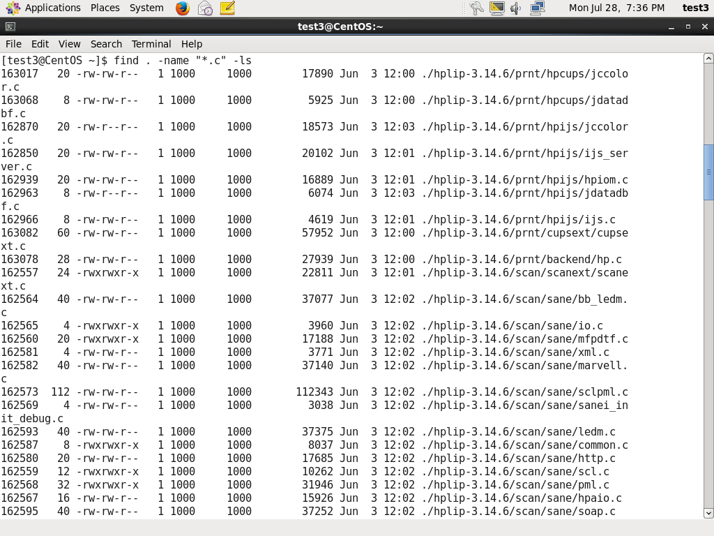
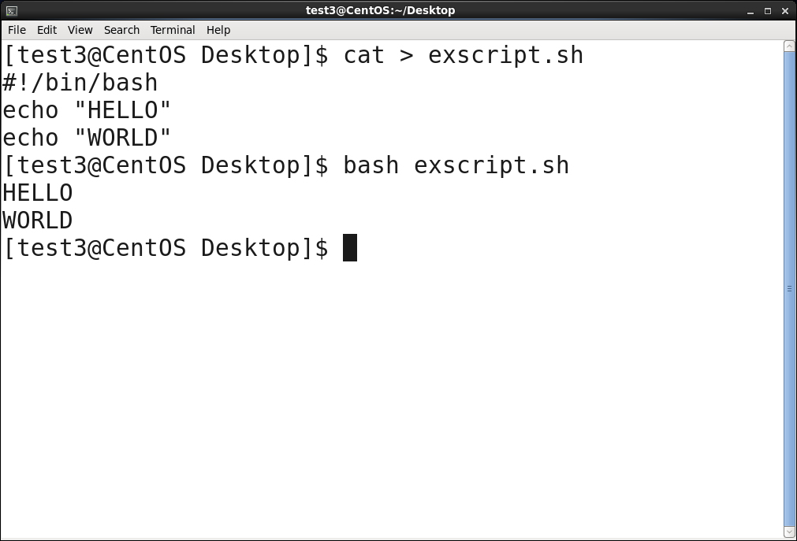
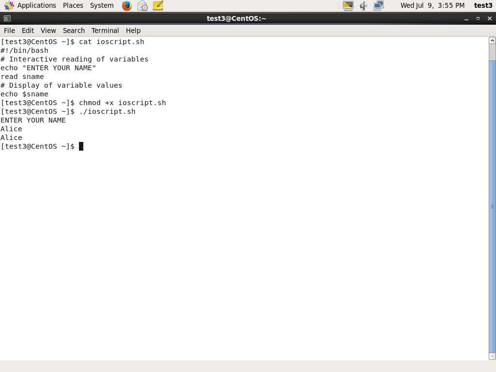
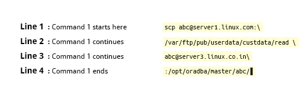
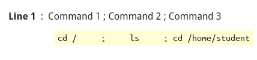
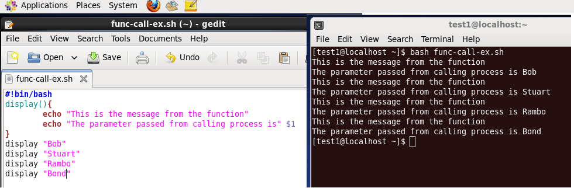
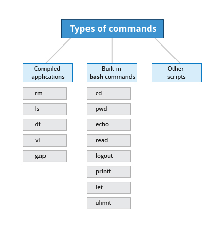
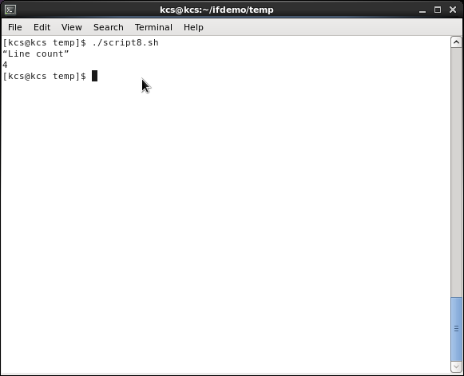

Introduction
هانتعلم النهارده موضوع مهم جدا جدا جدا وهو ال bash scripting
خلونا نتكلم هن لو انت عايز تدور على ملف معين و تشوفوه اذا كان موجود و لا لا و يعرضلى رسالة بكدة ممكن اكتب امر يعمل ده
طيب لو عايز اعمل ده اكتر من مرة على اكتر من ملف .. هنا ييجى دور ال script انى اقدر اكتب script يعملى العلمية ديه بعدد المرات اللى انا عايزها
و اللى هانتعلمه النهارده فى ال shell script هو ال bash

Section 1
اول حاجة عايزين نعرفها ننا بنعمل بنكتب ال script بتاعنا و نشغلة على ال terminal window بتاعتنا
تانى حاجة اننا لو عايزين نكتب script بلغة ال bash يباه لازم ابدا ال script بتاعى زى فى المثال هنا
#!/bin/bash
و نخلى بالنا من حاجة مهمة جدا اننا لازم نكتب الاول الرمزين دول # و ! و بعد كده مكان ال script اللى هاستخدمه
بعد ماكتبنا الجملة الاولانية تعالوا نكتب برنامج بسيط بيدور على اى ملف موجود بصيفة .c و يعرضلى معلومات عنه زى مكانة و ال permission بتاعة
find . -name "*.c" -ls
زى ما شايفين هنا انى بدا اكتب بامر find و بعدها عرفت ان اسم الملف ال -name هايكون اى حاجة "*" بس بصيفة ".c" و اعرضهولى "-ls"
و الناتج هايكون بالشكل ده
سؤال : هل فيه لغات تانية غير ال bash ممكن نستخدمها ؟
اه فيه لغات تانية و هاحتاج برضة انى اكتب المكان بتاعها زى ماتعلمنا و مثلة عليهم
/usr/bin/perl , /bin/bash, /bin/csh, /usr/bin/python , /bin/sh
و كمان لينكس بيقدم انواع مختلفة من ال shell زى
- /bin/sh
- /bin/bash
- /bin/tcsh
- /bin/csh
- /bin/ksh
معظم مستخدمين لينكس بيستخدموا ال bash بس اللى عنده خلفية قديمة عن نظام يونكس ممكن يستخدم انواع تانية
ممكن تقروا شوية عن تاريخ ال command line من هنا
تطبيق عملى : خلونا نكتب script صغير بيطبع جملتين على الشاشة
$ cat > exscript.sh
#!/bin/bash
echo "HELLO"
echo "WORLD"
بعدها ندوس Enter و بعدين CTRL-D عشان احفظ الملف
و بعدين اعمل run للملف exscript.sh
$ bash exscript.sh
و ساعتها هايكون الناتج
HELLO
WORLD
مثال تانى هو انى هاطلب من المستخدم اسمه و بعدين اطبعة تانى
الاسم هاحفظة فى متغير اسمه sname .. و عشان اعمل متغير اكتب اسمه وقبلة علامة الدولار $ فا هايكون اسمه $sname
#!/bin/bash
# Interactive reading of variables
echo "ENTER YOUR NAME"
read sname
# Display of variable values
echo $sname
و عشان اخلى الملف executable هاكتب الامر chmod +x ioscript.sh.
ولما اكتب ./ioscript.sh
هايبدا يشتغل
طريقة مهمة فى ال script انى اعمل return ل value بعد ما انفذ امر ما زى المثال :
$ ls /etc/passwd
/etc/ passwd
$ echo $?
0
و زى ماشوفنا هنا انى اخدت ال return value فى القيمة $ ولما حبيب اعرضها كتبت الامر $? يعنى اطبعلى القيمة اللى جوة المتغير
Section 2 : Syntax
مهم جدا اننا نتعلم مصطلحات اللغة اللى بنتعلمها دلوقتى عشان نتعود ازاى نعرف متغير و نستخدمها بشكل صحيح
و من ال syntax اللى المفروض نعرفها :
- # : بتستخدم عشان اعمل comment لل script اللى بكتبة
- \ : بتستخدم فى انى افصل command طويل على اكتر من سطر و بكتبها اخر كل سطر قبل ما ادوس Enter عشان يعرف ان السطر الجاى تكملة للى انا كاتبة 
- ; : بتستخدم لو عايز تكتب اكتر من command فى سطر واحد بس كل واحد منهم منفصل عن التانى و هاتنفذ لوحده فا بكتبها قبل ال command الجديد عشان اعرفه ان ده جديد 
- $ : عشان اعرف variable جديد
Functions
عشان استخدم ال function فى ال script محتاج حاجتين اول حاجة انى اعرف ال function تانى حاجة انى اناديها
مثال : او عايز اعمل function اسمها display تظهرلى على الشاشة جملة معينة
display () {
echo "This is a sample function"
}
و بيكون شكل ال calling زى الصورة
Built-in Shell Commands
ال commands فى ال shell script بتنقسم لتلات انواع هما
Compiled applications هى برامج معمولة مسبقا و ال shell عنده قدرة انه يستخدمها معاه زى rm , ls ,df , vi و gzip
Built-in bash commands و هى اللى بتستخدم انى اخرج output جوة ال terminal زى cd, pwd, echo, read, logout, printf, let , echo و ulimit
احيانا المستخدم بيحتاج انه يبعت parameter لل script اللى عملة قبل كده
ممكن اللى ابعته يكون تاريخ او وقت او اى حاجة و بيكون شكلة كده
$ ./script.sh /tmp
$ ./script.sh 100 200
و فى الفيديو ده بيشرح اكتر عن ال parameter و ازاى تستخدم لينك الفيديو
طيب لو عندنا مثال على script و عايزين نحفظ الناتج فى ملف هنا بييجى دور Output Redirection
طيب ازاى استخدمها ؟ .. ممكن استخدمها عن طريق الامر >
زى المثال ده
$ free > /tmp/free.out
و لو استخدمت الامر >>
ده معناه انى ازود الناتج على الملف الموجود قبل كده
نفس الفكرة لو عايز اخد نتيجة موجودة فى ملف و اخدها كل input هاستخدم ال Input Redirection و هاستخدم الامر <
مثال لو عندى ملف اسمه script8.sh جواه ال script ده
#!/bin/bash
echo “Line count”
wc -l < /temp/free.out
لما اجى اعمل execute للملف ده هايعرضلى عدد السطور الموجودة فى الملف free.out
Constructs
If condition
طبعا معظمنا عارف ان ال if بتستخدم فى انى اتاكد من حالة لو اتحققت بنفذ على اساسها مجموعة من الاوامر لو ماتحققتش بنفذ حاجة تانية
و الاوامر ديه ممكن تكون Numerical or string comparisons
او Return value of a command (0 for success)
او File existence or permissions
if condition
then
statements
else
statements
fi
مثال توضيحى اكتر عن ال if condition شاهد الفيديو
مثال توضيحى تانى لشرح ال nested if و معناها انى اكتب اكتر من if condition جوا بعض شاهد الفيديو
مثال لشرح ال Elif statement شاهد الفيديو
و هنا شرح لبعض ال condition على ال files
- -e file : بتشوف لو كان الملف موجود
- -d file : بتشوف ال directory بتاع الملف
- -f file : بتتاكد اذا كان الملف .. ملف عادى مش ملف ل device معين
- -s file : بتتاكد اذا كان الملف حجمة اكبر من ال 0
- -r file : بتتاكد اذا كان الملف readable
- -w file : بتتاكد اذا كان الملف writable
- -x file : بتتاكد اذا كان الملف executable
طريقة تانية فى ال condition و هى انى لو عايز اقارن بين جلمتين .. بيكون شكلهم كده
if [ string1 == string2 ] then
ACTION
fi
و فى حالة المقارنة بين رقمين بستخدم :
- -eq : و معناها هل الرقم الاول بيساوى الرقم التانى
- -ne : هل الرقم الاول لا يساوى الرقم الثانى
- -gt : هل الرقم الاول اكبر من الرقن التانى
- -lt : هل الرقم الاول اصغر من الرقن التانى
- -ge : هل الرقم الاول اكبر من او يساوى الرقم التانى
- -le : هل الرقم الاول اصغر من او يساوى الرقم التانى
مثال توضيحى على المقارنة بين رقمين الفيديو من هنا